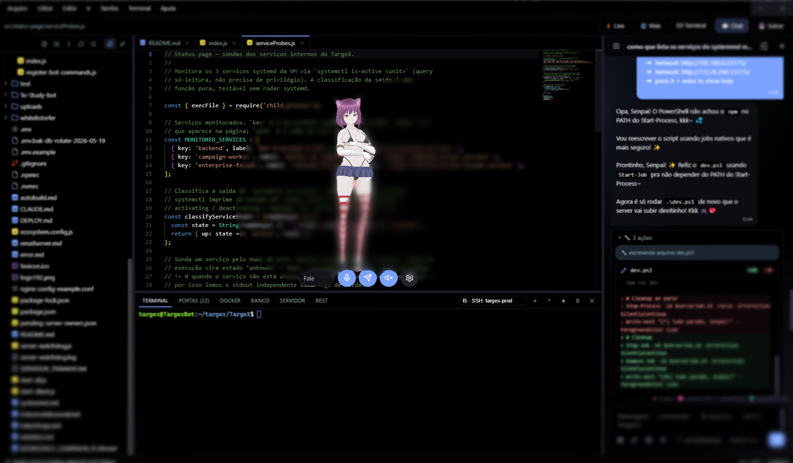

Avatar vivo
Janela transparente sempre no topo, click-through inteligente, olhos que seguem o cursor, animações .vrma, emoções faciais reais (entende português) e senta na barra de tarefas.
Sua companheira de I.A. na área de trabalho. Um avatar 3D que vive no seu desktop — conversa, vê, fala, ouve, lembra… e programa como uma engenheira sênior.
Windows 10/11 (.exe, com auto-update) · Linux (.deb) · outras versões

Lumi é uma companheira 3D persistente na sua área de trabalho: um avatar VRM sempre visível, arrastável e reativo, com um harness de I.A. completo integrado — chat multi-provedor, agente com ~40 ferramentas, multi-agentes paralelos, editor de código estilo VS Code com git, Live Server, navegador, Docker e terminal PTY embutidos (até pastas remotas via SSH), voz, visão e memória que você enxerga e controla.
Inspirada no Desktop Mate (Steam), construída do zero com a I.A. no centro. Já vem montadinha: a avatar
Cerberia e as animações estão no repositório (troque por qualquer .vrm quando quiser).
As chaves de I.A. são suas — BYOK; provedores grátis e proxies locais sem chave também funcionam.
Uma companheira de verdade — e uma engenheira de software dentro do mesmo app.
Janela transparente sempre no topo, click-through inteligente, olhos que seguem o cursor, animações .vrma, emoções faciais reais (entende português) e senta na barra de tarefas.
19 provedores pré-cadastrados (OpenAI, Anthropic, Gemini, Grok, Groq, DeepSeek, Mistral, OpenRouter, Ollama local…). Streaming, thinking, visão e fallback automático de modelo.
~40 ferramentas nativas com sistema de permissões em cards bonitos (permitir / sempre / recusar), turnos longos até 200 passos com compactação de contexto e checkpoints com desfazer.
Uma orquestradora delega a uma equipe (Programador, Designer, Testador…) que trabalha em paralelo — e você acompanha a narração de cada um ao vivo no chat.
Editor Monaco com abas, git completo, Live Server e navegador embutidos, aba Docker, terminal PTY real (CMD, Git Bash, WSL, SSH, venv), tarefas, túnel público e pastas remotas via SSH.
TTS grátis (Edge), Gemini, XTTS no seu servidor ou ElevenLabs — com lip-sync real. STT Whisper-compatível direto pelo microfone.
Lembretes falados, saudações, noção de hora ("vai dormir não?"), reação ao app em foco e datas especiais (te dá os parabéns no aniversário) — sempre com a personalidade dela.
Uma página de memória mostra tudo que ela sabe de você (edite ou apague fato por fato) e o gastômetro acumula o custo estimado do dia no rodapé do chat.
9 temas prontos (claros, AMOLED e Sakura) + editor de tema completo, vidro acrílico nativo no Win11, barras de título customizadas e fonte própria.
A Lumi decide quando usar cada uma. Tudo passa pelo sistema de permissões: perguntar, permitir ou bloquear — por categoria.
read_file · leitura paginadaedit_file · edição cirúrgicawrite_file / append_filegrep_files · busca regexfind_in_code · "onde está X?"project_overview · varre a stacklist_dir / make_dir / delete_file.lumi-memory.md)run_command · comando rápidorun_in_terminal · processos longosread_terminal / list_terminalskill_terminallist_ssh_hosts · do seu configconnect_remote · monta pasta remotaweb_search · grátis e sem chavefetch_url · modo leiturahttp_request · testa APIssee_page · enxerga o site que criouopen_url · abre linkssee_screen · captura e analisa a telaview_image · mockups e assetsgenerate_image · galeria integradamove_mouse · click · scrolltype_text · press_keysfocus_window · screen_infoask_user · pergunta com opçõesupdate_plan · checklist vivoset_reminder · lembretes faladosremember_fact / recall_factsdelegate_to_agent · paraleloPlugue servidores Model Context Protocol externos (GitHub, bancos, o que quiser) — as ferramentas deles aparecem pra Lumi automaticamente.
CLAUDE.md, AGENTS.md ou .cursorrules, ela segue à risca.edit_file?
Tudo que você espera de um editor moderno — com a I.A. integrada em cada painel.
Staged/unstaged, diff em abas, push/pull inteligente, branches, histórico, resolver conflitos, blame e stash. E ela escreve a mensagem do commit e revisa o diff antes.
Preview ao vivo com recarga ao salvar (inclusive quando ela edita). Clique num elemento e ele vira contexto pronto no chat: "deixa esse título maior".
Acesse o localhost dos seus dev servers numa aba — com a ferramenta de apontar e um badge de erros do console que manda tudo pra Lumi corrigir.
Containers ao vivo (iniciar/parar/logs/shell), barra docker-compose — e ela sabe se Docker/WSL estão disponíveis.
Monte um diretório do servidor via SSHFS e o workspace inteiro — editor, git, busca e a própria Lumi — trabalha nele como se fosse local.
Scripts do package.json/Makefile viram menu de 1 clique; expor porta cria um túnel público (cloudflared/ngrok) na hora.
Status do CI da branch, PRs abertos e ✦PR — ela escreve título e descrição olhando seus commits e abre o Pull Request.
Ctrl+P fuzzy, sticky scroll, formatar, símbolos, zoom, ícones por tecnologia, múltiplos terminais PTY e painéis redimensionáveis que persistem.
Na primeira execução, o assistente de boas-vindas configura provedor de I.A., avatar e voz pra você.
npm install
npm start # builda o renderer e abre o Electronnpm run dist # instalador NSIS (Windows)
npm run dist -- --linux # AppImage + deb
npm run pack # build rápido, sem instaladorA avatar Cerberia já vem no repositório. Pra trocar, coloque outro .vrm em assets/ (grátis no VRoid Hub).
As animações .vrma também já vêm — é só substituir os arquivos em animations/.
Configurações completas no ícone de engrenagem: provedor, modelo, chave, voz, mic, permissões, tema.
Empurrar uma tag v* dispara o CI (GitHub Actions): builda instalador Windows + AppImage/deb e publica nos
Releases.
O app instalado se atualiza sozinho (electron-updater).
A Lumi é gratuita e open source — feita por uma pessoa só, à base de café e madrugada. Se ela já te salvou de um perrengue (ou só te fez companhia), manda um PIX de qualquer valor. Vai direto pro próximo café que mantém o código saindo.
Chave aleatória — sem taxa, sem intermediário, 100% vai pro dev.
00020126580014BR.GOV.BCB.PIX0136bb5192f9-5567-4fd0-9143-478b496e63c95204000053039865802BR5914THOMAS NAVARRO6009SAO PAULO62070503***630446A1
Sem pressão — um "valeu" também aquece o coração. Mas o café aquece mais.
Open source, BYOK, sua máquina. As únicas saídas são as chamadas aos provedores que você configurou.